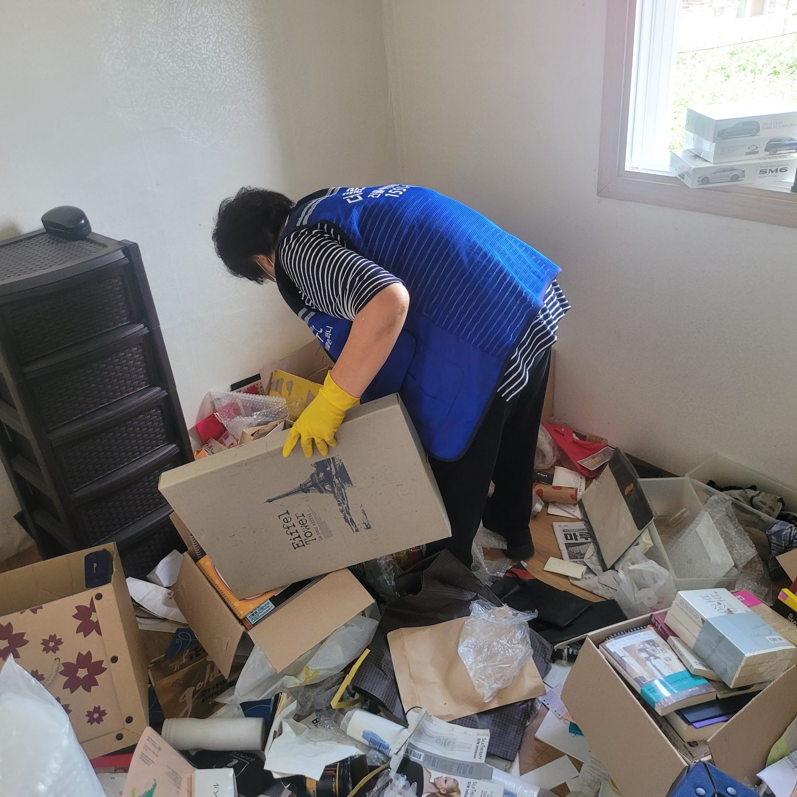
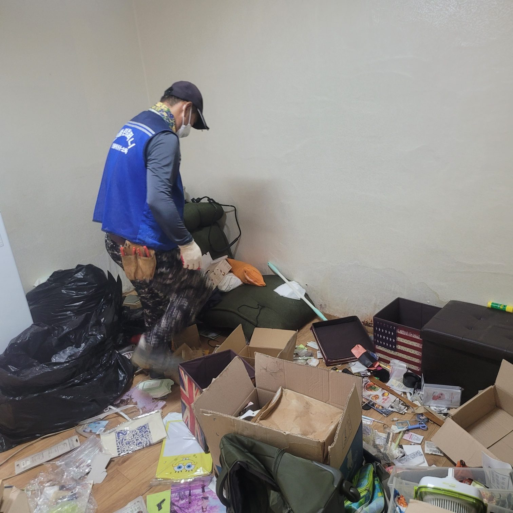
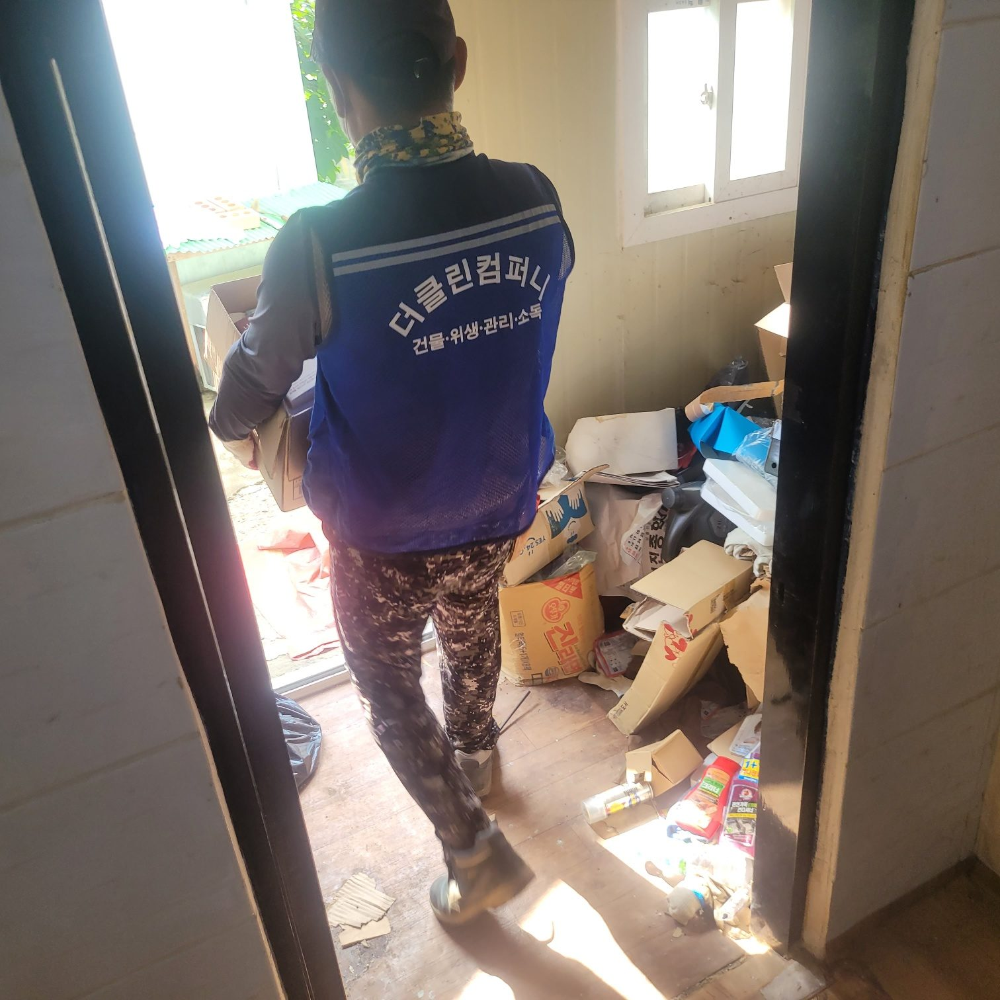
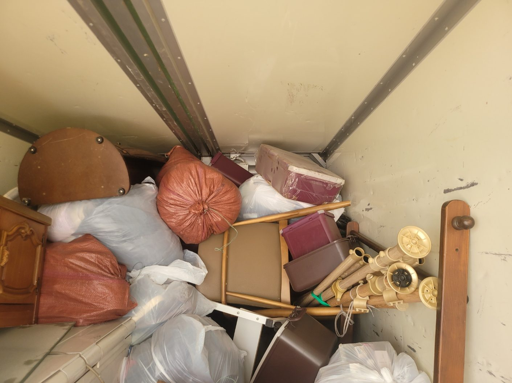
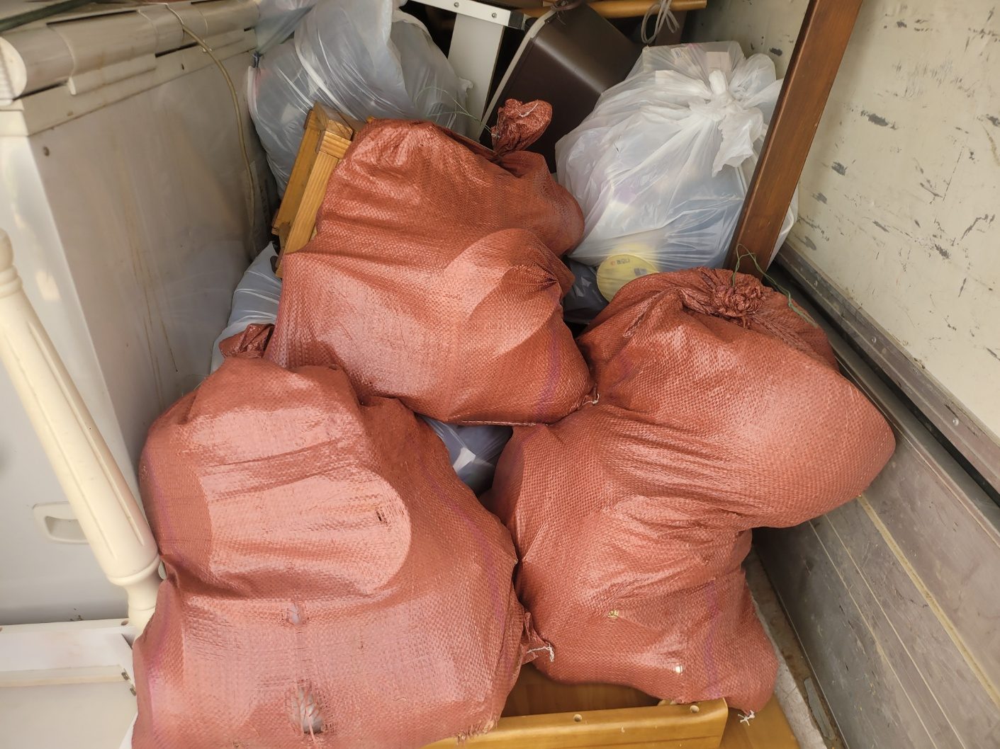
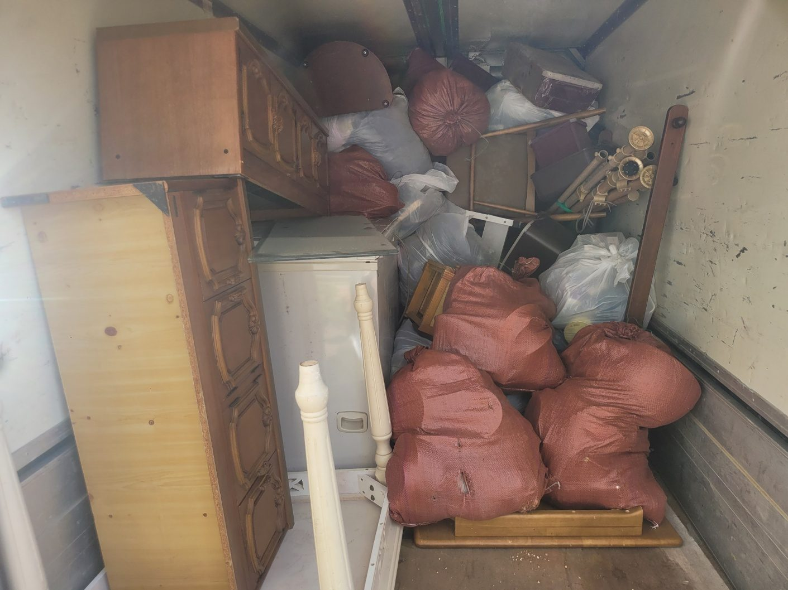

먼저 분류합니다
작업에 앞서 귀중품, 현금, 증서, 사진, 서류를 따로 모아 유가족께 전달합니다. 버릴 것과 남길 것은 반드시 확인을 거칩니다.
칠곡 안에서도 건물 용도와 연식에 따라 정도만 다를 뿐 원인은 비슷합니다.

작업에 앞서 귀중품, 현금, 증서, 사진, 서류를 따로 모아 유가족께 전달합니다. 버릴 것과 남길 것은 반드시 확인을 거칩니다.

날짜를 정해두고 재촉하지 않습니다. 함께 계시기 어려우면 사진으로 확인하시며 진행할 수 있습니다.

물품 반출이 끝나면 청소와 소독을 진행해 공간을 다시 쓸 수 있는 상태로 정리합니다.
유품정리는 물건을 치우는 일이 아니라 남은 분들의 시간을 정리하는 일입니다. 서두르지 않고 확인하며 진행합니다.
칠곡 현장도 같은 절차로 진행하며, 현장 조건에 따라 장비와 보양 범위를 조정합니다.

전화나 방문으로 상황을 듣고 물품량과 공간 상태를 봅니다. 서두르지 않으셔도 됩니다.

유가족 입회 아래 남길 물품과 서류를 먼저 분류해 전달합니다.

재활용, 일반, 대형 폐기물로 나눠 담습니다. 지정폐기물은 별도 절차로 처리합니다.

엘리베이터와 계단 상황에 맞춰 반출하고 차량에 적재합니다.
공간을 청소하고 소독한 뒤 확인해 드립니다.
칠곡에서 저희가 주로 맡는 곳은 아파트와 빌라, 원룸 같은 주거 공간입니다. 고독사 현장이나 오래 방치된 저장강박 현장은 폐기물량이 많아 인력과 차량을 늘려 잡습니다.
경북 칠곡군 전역으로 출장합니다. 칠곡 전 지역 (읍 · 면 전체) 등 칠곡 안쪽은 물론, 인접한 구미 · 대구 · 성주 현장도 대전점이 함께 관리하고 있어 가까운 일정을 묶으면 이동 비용을 줄일 수 있습니다.
대표번호 1551-1559로 접수하시면 대전점 담당자에게 바로 연결됩니다. 현장 주소와 사진을 함께 보내주시면 상담이 빨라집니다.
칠곡 현장도 유가족 일정에 맞춰 날짜를 잡습니다. 재촉하지 않고 확인하며 진행합니다.
현장 확인 후 항목별로 견적을 드리며, 추가 작업이 생기면 먼저 알려드리고 동의를 받은 뒤 진행합니다. 작업이 끝난 뒤에 금액이 늘어나는 일은 없습니다.
세금계산서와 완료확인서까지 갖춰 드립니다. 관공서·관급 발주에 필요한 서류는 미리 말씀해 주시면 준비합니다.
건물위생관리업과 소독업 신고를 마친 업체로, 산업안전 기준에 맞춰 장비 점검표를 작성하고 시작합니다. 점검 기록은 발주처에 함께 드립니다.
보정 없이 촬영한 실제 작업 사진입니다.



대전점 팀이 갑니다. 칠곡은 상담부터 시공까지 같은 팀이 맡아 진행하며, 인근 구미 현장도 함께 관리합니다.
물품량, 공간 크기, 층수와 엘리베이터 유무, 소독 필요 여부에 따라 정해집니다. 현장 확인 후 말씀드립니다.
무표시 차량과 일반 복장으로 진행할 수 있습니다. 작업 시간대도 조율해 드립니다.
발견 즉시 따로 보관해 유가족께 전달합니다. 목록으로 정리해 함께 드립니다.
귀중품 분류 단계에는 계시는 편이 좋습니다. 어려우시면 사진으로 확인하며 진행할 수 있습니다.
소독업 신고 업체로 전문 약품과 장비를 갖추고 있습니다. 상황을 말씀해 주시면 준비해 방문합니다.